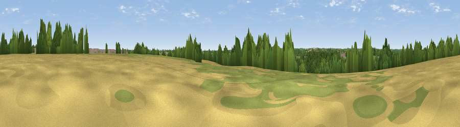

Viewpoint near Castle Combe
#39999 in England · top 78% of its area beats it · near Castle Combe · path 237 mWhere it is
The exact computed spot (ST 84475 76575). Click the marker for map links.
Public access: the nearest public right of way is about 237 m away — the final stretch may cross private land. Computed from Natural England's CRoW access layer and OpenStreetMap rights of way — not the legal definitive map. Always verify locally.
The view, rendered

A 360° render of this exact spot computed from the terrain model, tree cover and land cover — summer colours, afternoon light, calibrated against photographs of famous viewpoints. Real trees, hedges and buildings will differ in detail.
The panorama
Grey silhouette: terrain skyline in each direction (720 bearings, Earth curvature and refraction included). Dashed green: skyline with trees (+15 m) and buildings (+8 m) as obstacles. Blue strip: how far the ground is visible on each bearing.
Where the view opens
Wedge length = distance to the farthest visible ground on that bearing (vegetation-aware). Rings at 10, 25 and 50 km.
What fills the view
49% grassland · 26% woodland · 24% cropland ·
Angular shares of the visible panorama (visual magnitude), not map area. Landscape diversity 0.47 (0–1 Shannon).
Key numbers
More beautiful places nearby
The staircase of upgrades: each row has a higher view potential than everything closer. Driving times are estimates from straight-line distance, calibrated against real road routing — check an actual route before setting out.
| Place | Direction | Drive | Score |
|---|---|---|---|
| Viewpoint near North Wraxall | SSW · 3 km | ~8 min | 39.0 |
| Lan Hill | ESE · 4 km | ~9 min | 44.9 |
| Viewpoint near Colerne | SSW · 7 km | ~14 min | 45.5 |
| Viewpoint near Ashley | SSW · 8 km | ~17 min | 52.7 |
| Viewpoint near Hinton | W · 9 km | ~18 min | 65.8 |
| Viewpoint near Horton | NW · 11 km | ~22 min | 66.9 |
| Hanging Hill | WSW · 15 km | ~26 min | 76.4 |
| Viewpoint near Stinchcombe | NNW · 24 km | ~39 min | 80.5 |
51.48791, -2.22499 · source: screening · position refined by local search. Computed location — check access rights before visiting.